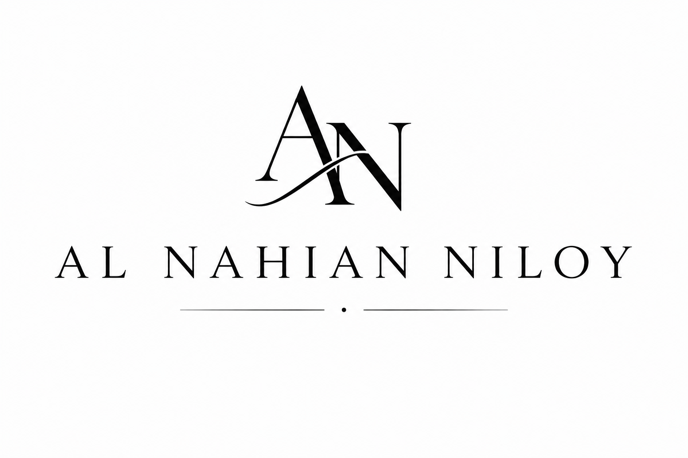
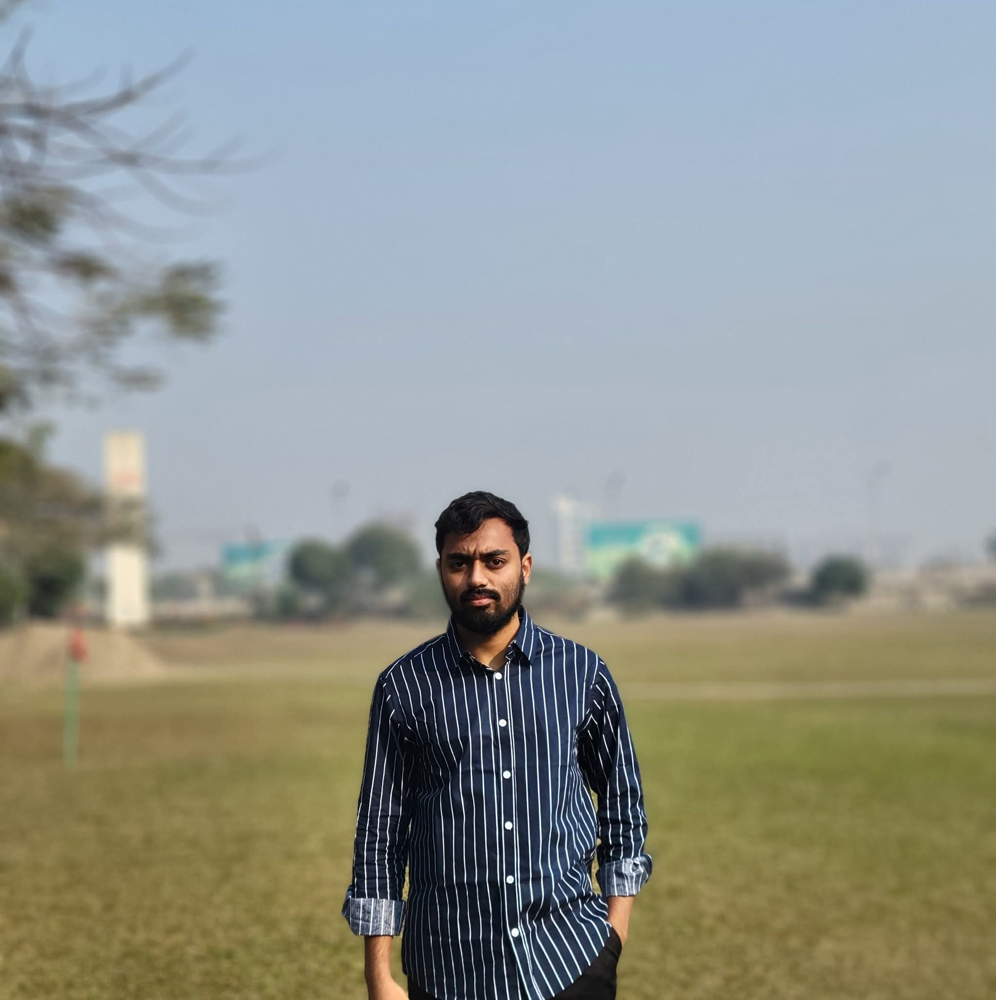

Languages
- Python
- JavaScript
- C / C++
- Java
- SQL

alnahian59 Let’s talkComputer Science & Engineering • Undergraduate
I’m Al Nahian Niloy, a developer who enjoys turning ideas into practical products with clean architecture, strong fundamentals, and a product-minded approach.

About
I’m a Computer Science & Engineering student with a love for building products that are reliable, human-centered, and thoughtfully engineered.
My work sits at the intersection of algorithms, systems, and product thinking. I enjoy solving hard problems, writing maintainable code, and learning how technology can create real impact.
Skills
Experience
Exploring NLP, machine learning, and systems thinking through independent projects and academic work.
Building full-stack experiences with a clear focus on maintainability, performance, and user value.
Strong grounding in data structures, operating systems, networking, databases, and software engineering fundamentals.
Research & Milestones
Exploring AI, machine learning, and modern software systems with a focus on useful, ethical, and practical impact.
Open to collaborationsContact
I’m open to internships, freelance work, research collaboration, and thoughtful conversations about software and product ideas.